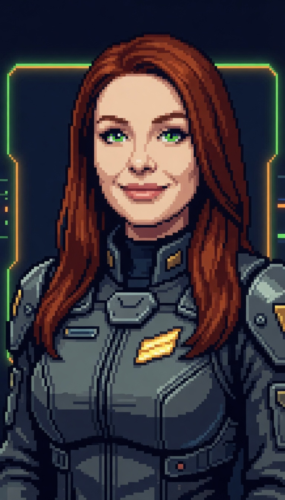

Real portrait art · real game cyan #00d4d4 · Rajdhani Bold
Standalone mockup — touches no game code. Portrait is
vo/spc_idle_smile_wide.png (600×913, true 0.657:1 ratio,
object-fit:contain, not squared). Speaker label sits above the
text box, left-aligned to its left edge. Portrait height tracks the text box
height in each state. Chamfered corners (9px), layered cyan glow, signal bars
+ trailing accent line bottom-right.
